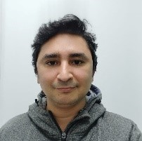

Buscar ayuda
Si estás experimentando problemas de salud mental, es importante buscar ayuda profesional. A continuación, mostramos unos cuantos expertos en el área, en donde se pueden contactar a ellos o si prefiere buscar a otros mediante le siguiente enlace:
Expertos en salud mentalAlejandro Reveco
Psicólogo
Terapia Psicoanalítica
Profesional Verificado
Verificado en la Superintendencia de Salud Chilena
Contactar Experto
Especialidades
Abordaje familiar (TEA) | Ansiedad | Autoestima | Depresión | Duelo | Habilidades parentales | Psicoanálisis | Psicoterapia Adolescente | Psicoterapia Adulto | Relaciones sociales |Modalidad de Atención
| Por Videollamada || Presencial |Alex Rosenfeld Acuña

Psicólogo
Terapia Humanista Gestáltica
Profesional Verificado
Verificado en la Superintendencia de Salud Chilena
Especialidades
Ansiedad | Autoestima | Crisis de pánico | Depresión | Desarrollo y crecimiento personal | Duelo | Estrés | Gestalt | Habilidades sociales en adolescentes | Trastornos adaptativos | Trastornos de ansiedad |Modalidad de Atención
| Por Videollamada || Presencial |Almendra Montenegro Moya
Psicóloga
Terapia Sistémica Breve
Profesional Verificado
Verificado en la Superintendencia de Salud Chilena
Especialidades
Adultos mayores | Angustia | Ansiedad | Crisis de pánico | Depresión | Duelo | Estrés | Fobia social | Problemas de Autoestima | Trastorno de Estrés postraumático (TEPT) |Modalidad de Atención
| Por Videollamada || Presencial |Bastián Arenas Del Pezo
Psicólogo
Terapia Psicoanalítica
Profesional Verificado
Verificado en la Superintendencia de Salud Chilena
Especialidades
Abuso sexual | Angustia | Ansiedad | Autoestima | Convivencia escolar | Depresión, Distimias | Duelo | Estrés | Mutismo selectivo | Neurosis | Trastorno de estrés post traumático (TEPT) | Trastornos del sueño |Modalidad de Atención
| Por Chat || Por Llamada de voz || Por Videollamada |Celeste Martín Cevallos
Psicóloga
Terapia Integrativa
Profesional Verificado
Verificado en la Superintendencia de Salud Chilena